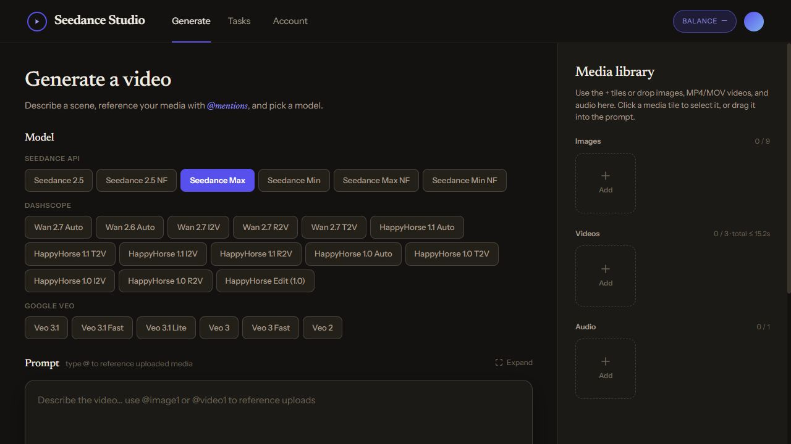
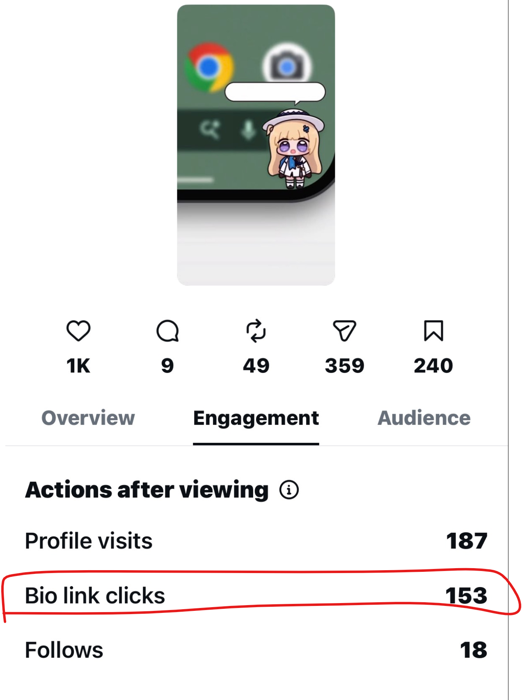
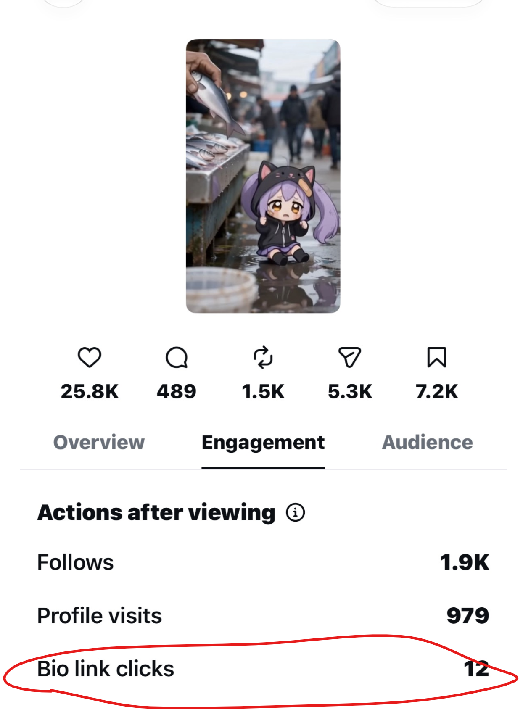

FRISSON LABS · TOD YANSOMBOON
Create. Learn. Repeat.
AI creative workflows that carry lessons into the next experiment.
CREATE · 0–45 SECONDS
Better context. Better starting points.
I built the video interface and keep character rules, prompts, and lessons in Markdown.
Consistency. Lighting. Story.
Document the lesson. Reuse it next time.
My creative review · examples, not a controlled comparison.
A reusable creative memory.
Not enough motion.
Then another clip.
“Three beats per clip, four sub-times total. More story means another clip.”
Process details
Set character and visual rules → generate with reference media → review → document useful lessons. Markdown is documentation alongside the tool; automatic loading is not claimed.
TEST · 45–70 SECONDS
Give viewers a next step.
I tested a Claude-made CTA at the end of a video.
187 profile visits · 18 follows
979 profile visits · 1.9K follows
The CTA example recorded more link clicks. That gave me a reason to test beyond views.
Supplied Instagram snapshots · different videos, not an A/B test. Clicks ≠ signups.
Original analytics screenshots


EXPLORE · 70–90 SECONDS
Take the workflow into distribution.
Next: platform copy with Claude and publishing workflows with Meta API.
Long-term goal: feed performance lessons back into creative.
Concept only · no live integrations
A small character. A little moment of kindness.
Meet the companions at Oto ↗More work: character tools & interactive games
I also built Oto’s character creation workflow and experiment with games where users make choices.
My reported “days to an hour” estimate still needs a comparable finished stage and timing definition. Game evidence and public-display permission remain pending.